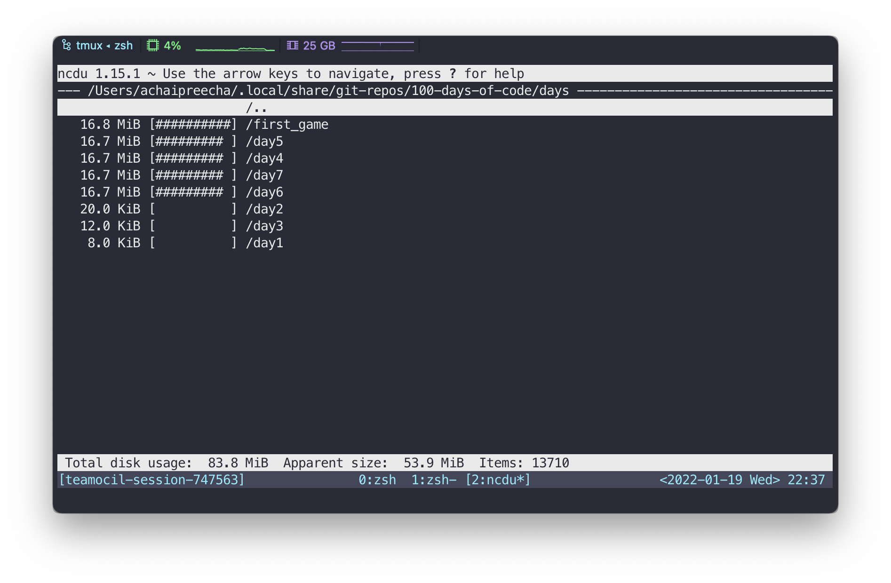

Disk Usage Before Yarn Workspaces
In my #100DaysOfCode projects, I included Tailwind CSS in many
days (day 4, 5, 6, 7).
This introduces node_module folders on each one of these folders
with pretty much duplicate content.
